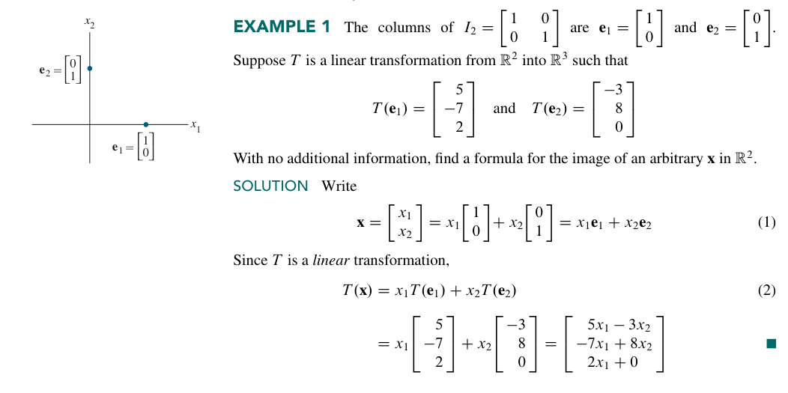
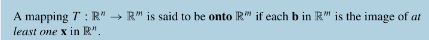
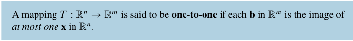
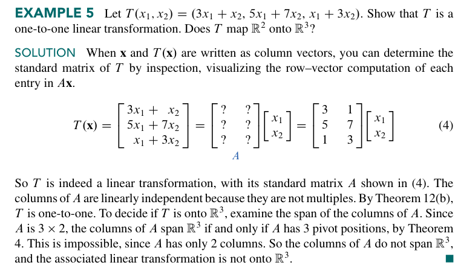

1.9 The Matrix of a Linear Transformation#
当我们提到线性变换 T 的时候，我们总会想着找到一个 \(T(x)\) 的表达式。下面的讨论会说明：事实上，每一个线性变换都与一个矩阵\(A\)相对应。
而找到这个 \(A\) 的关键，就是找到这个线性变换对一个单位矩阵 \(I_{n}\) 的每一列做了什么。更具体的：\(T\)完全由\(T\)对单位矩阵的每一列做了什么决定。

比如这个算例，就很清晰地展现了如何由 \(T\) 对单位矩阵的两列 \(e_{1},e_{2}\) 的变换推导 \(T\) 对任意一个 \(x \in ℝ^2\) 的向量是如何变换的。具体地：先把 \(\mathbf{x}\) 拆成线性组合，再利用线性变换的 线性 做完这件事情。
同时我们注意方程（2）的形式。这事实上就是一个矩阵和向量的乘法。我们完全可以直接写出 \(A\) 来。所以，一般的，我们可以把 \(A\) 的形式表示成下面这样：
这就是我们的Theorem 10
这个矩阵被称为 standard matrix for the linear transformation T，线性变换 T 的标准矩阵
当然，一个很自然的问题是：我们是否能找到第二个矩阵，同样表示这个 T 变换呢？来看这个Exercise
这就保证了 \(A\) 的唯一性。

现在我们就可以知道：
我们现在知道，从 \(R_{n}\) 到 \(R_{m}\) 的每一个线性变换都可以看作一个矩阵变换，反之亦然。“线性变换”这一术语侧重的是映射的一种性质，而“矩阵变换”则描述这种映射是如何实现的，正如例 2 和例 3 所说明的那样。
下面是一个速查表：
| 变换 | 矩阵 | 备注 |
|---|---|---|
| 关于 \(x\) 轴反射 | \(\begin{pmatrix}1&0\\0&-1\end{pmatrix}\) | 行列式 \(-1\) |
| 关于 \(y\) 轴反射 | \(\begin{pmatrix}-1&0\\0&1\end{pmatrix}\) | 行列式 \(-1\) |
| 关于 \(y=x\) 反射 | \(\begin{pmatrix}0&1\\1&0\end{pmatrix}\) | 交换坐标 |
| 关于 \(y=-x\) 反射 | \(\begin{pmatrix}0&-1\\-1&0\end{pmatrix}\) | 交换并取反 |
| 关于角 \(\theta\) 直线反射 | \(\begin{pmatrix}\cos 2\theta&\sin 2\theta\\ \sin 2\theta&-\cos 2\theta\end{pmatrix}\) | 过原点直线 |
| 沿 \(x\) 轴伸缩 | \(\begin{pmatrix}k&0\\0&1\end{pmatrix}\) | \(k>1\) 拉伸，\(0 |
| 沿 \(y\) 轴伸缩 | \(\begin{pmatrix}1&0\\0&k\end{pmatrix}\) | 同上 |
| 均匀伸缩 | \(\begin{pmatrix}k&0\\0&k\end{pmatrix}\) | 整体缩放 |
| 水平剪切 | \(\begin{pmatrix}1&k\\0&1\end{pmatrix}\) | 面积不变 |
| 垂直剪切 | \(\begin{pmatrix}1&0\\k&1\end{pmatrix}\) | 面积不变 |
| 到 \(x\) 轴投影 | \(\begin{pmatrix}1&0\\0&0\end{pmatrix}\) | 不可逆 |
| 到 \(y\) 轴投影 | \(\begin{pmatrix}0&0\\0&1\end{pmatrix}\) | 不可逆 |
| 到方向 \((a,b)\) 投影 | \(\frac{1}{a^2+b^2}\begin{pmatrix}a^2&ab\\ab&b^2\end{pmatrix}\) | 正交投影 |
Existence and Uniqueness Questions#
线性变换给出了一个新的理解存在性和唯一性问题的方式。
首先给出两个定义。


那么，"Does \(T\) map \(ℝ^n\) onto \(ℝ^m\)?"就是一个存在性问题。"Is \(T\) one to one?"就是一个唯一性问题。
是一个 map \(ℝ^4\) onto \(ℝ^3\) 的矩阵，但显然它不 one to one。
下面是一个关于单射的定理。

证明的关键是若不一一映射，则 \(T(x)\) 就会有两个不同的 \(\mathbf{u},\mathbf{v}\) 被映射到同一个值 \(\mathbf{b}\)，这样 \((\mathbf{u-v})\) 就会被映射到 \(\mathbf{0}\)，所以就不只有 \(\mathbf{0}\) 这个解。
下面是一个关于满射和单射的定理。

证明 a 的关键是利用 Theorem4，说明 \(A\) 的列张开 \(ℝ^m\) 和对任意的 \(\mathbf{b}\inℝ^m,A\vec{x}=\mathbf{b}\) 是有解的这两件事等价。后者就是满射的定义。
证明 b 的关键是利用 Theorem 11，再利用 1.7 的一个结论。
下面是一个算例。

习题选：
T41